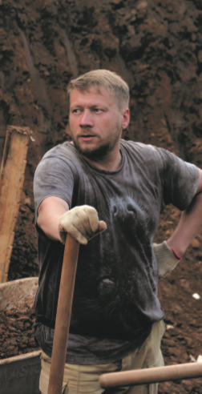

Денис Востриков - рабочий экспедиции
– Вы знали что-нибудь о мамонтах в детстве?
– Я имел очень общее представление. Всегда динозавры-мамонты мешаются в одну кучу. Я не «улетал» в детстве по этой теме, но интересовался. У меня книга об этом даже была – «Силур, девон, карбон».
– Тяжело копать?
– Да, тяжело физически, но интересно.
– А Вы лично находили какую-нибудь кость?
– Я находил бедренную кость большую.
– Есть у вас мечта, связанная с раскопками? Может быть, чтобы они закончились?
– Сложно сказать, с одной стороны, сложно физически копать, с другой – стало традицией. О! Чтоб комаров не было.